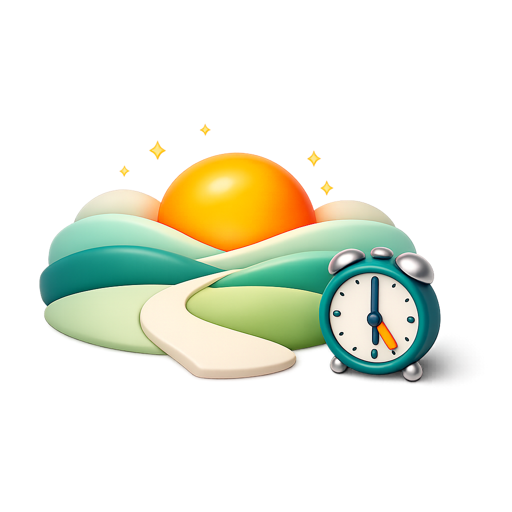
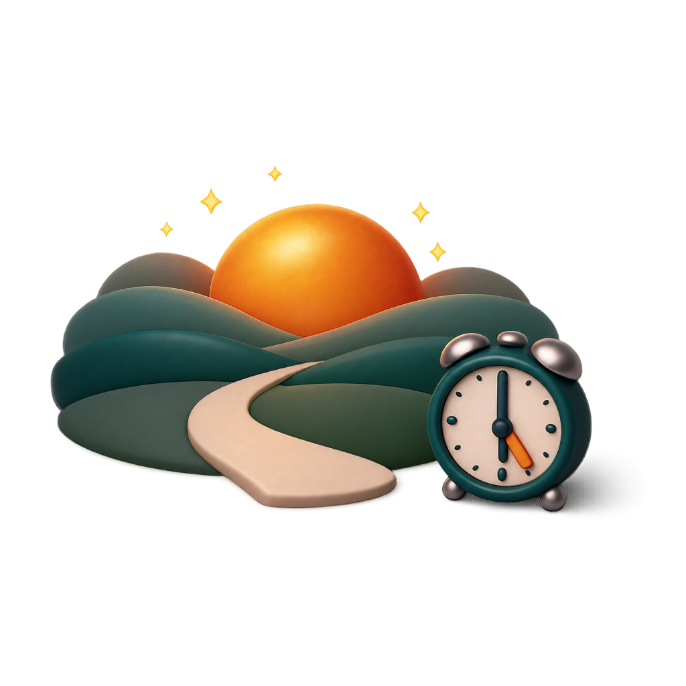

خانه


زمان طلوع
--:--
مانده تا بیداری
--:--:--
مشاهده جزئیات برنامه


فرض: طلوع خورشید = ۰۵:۲۲
۳۰ دقیقه پیش از طلوع: زمان لازم برای حرکت، جابهجایی و استقرار در موقعیت.
۲۵ دقیقه پیش از خروج: زمان لازم برای روتین بیداری، نوشیدن آب و آمادگی شخص.
این مراحل کوتاه به شما کمک میکنند پیش از خروج، روزتان را با آمادگی بیشتری آغاز کنید.
آمادگی از شب قبل، یک صبح آرامتر برای شما میسازد.
طلوعیاب یک همراه ساده و دقیق برای هماهنگکردن برنامه صبحگاهی شما با زمان واقعی طلوع خورشید است. با انتخاب شهر، ساعت طلوع، بیداری و خروج بهصورت متناسب با همان موقعیت محاسبه میشوند.
🎯 هدف اصلی طلوعیاب کمک به کسانی است که میخواهند صبحها برای پیادهروی یا دویدن به بیرون بروند، زمانی که هوا روشن است اما هنوز گرم نشده. تحقیقات علمی نشان میدهد که ورزش در گرما فشار قلبی-عروقی را افزایش میدهد: ضربان قلب ۵ تا ۱۵ ضربه در دقیقه بیشتر میشود، خون به جای عضلات به سمت پوست هدایت میشود و ذخایر گلیکوژن سریعتر مصرف میشوند. در مقابل، ورزش در هوای خنک باعث بهبود جریان خون به عضلات، کاهش خستگی و افزایش تا دو برابری توان بدنی میشود. طلوعیاب با محاسبه دقیق زمان طلوع، بهترین لحظه برای شروع فعالیت صبحگاهی شما را پیدا میکند.
اطلاعات موقعیت و تنظیمات شما روی دستگاه خودتان ذخیره میشوند. برنامه برای دریافت دادههای تازهی طلوع و آبوهوا فقط در زمان نیاز به اینترنت متصل میشود.